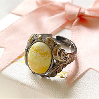
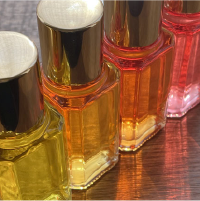
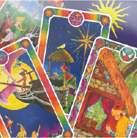
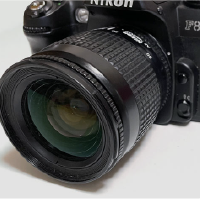
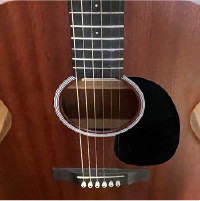

わたしのこと
自己紹介
MORO HANDS
名前はもろかなえといいます。
半世紀以上生きてきて、
大きな会社からや家族経営の小さな会社まで、
ネットショップ運営や印刷物製作、データ入力や経理など…
仕事もさまざま。
「この人の力になりたい」
という気持ちで、なんでもしてきました。
様々な人と関わってきて…経験だけは豊富です。
あなたも私もハッピーになることが大切で、
あなたと一緒に頑張りたい。
大事な人の想いを形にする、関わる人の考えを具現化する、
そんな写し鏡になれたらな…と思っています。
多趣味です
上手い・下手は別として、いろいろやってます。
-

七宝焼
-

カラーセラピー
-

タロットカード
-

カメラ
-

ギター
-

推し活
夢があります
七宝焼の先生は私の人生の恩師です。
たくさんの事を学ばせてもらっています。
先生は、七宝焼だけでなく絵もたくさん描いておられます。
先生には子供はいませんが、それらは先生の子供のようなもの。
先生はご自身が亡くなった後、作品たちの行方はどうなるか…とても心配されています。
私は、大事な先生の、大事な絵を、大事にしてくださる方の手に渡るようお手伝いをしたいと思っています。

連絡ください